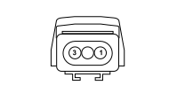
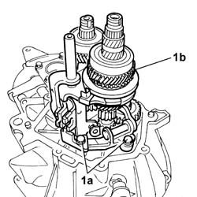

1008A47 rigid power-unit mount - timing side - r r for versions with air conditioner
- Path
- Procedures > 10 ENGINE UNIT > 1008 POWER UNIT SUPPORTS > 1008A power unit fastenings > 1008A47 rigid power-unit mount - timing side - r r for versions with air conditioner
- Kind
- repair procedure (removal / refitting; the operation number is the code)
- Applies to
- all engines; all production periods
- Interactive page
- https://sloeber94.github.io/elrnDB-fPnd/en/#/2752408
Applies to: engines: 1.1; all production periods
 Removing
Removing
 Refitting
Refitting
Applies to: engines: 1.2 8v; all production periods
Removing
Refitting
Applies to: engines: 1.3 JTD 16v; all production periods
Removing
Refitting
Topics that link to this page (8)
- 1020B12 CHAIN-DRIVE VALVE GEAR COVER - R.R. AND GASKET REPLACEMENT FOR MODELS WITH AIR-CONDITIONER
- 1032A12 CHAIN AND GEARS for timing system - R.R. for timing or Replacement.
- 1032B47 toothed drive pulley - r r for versions with air conditioner
- 1032B62 a/c duct pulley - r r
- 1032C40 Timing CHAIN TENSIONER PLATE - R.R.
- 1084B16 engine oil pump - r+r vehicles with a/c
- 1084B26 emgine oil intake duct - r r
- 1084B45 RIGID air supply PIPE between air-air heat exchanger and intermediate hose - R.R.